✕
El símbolo vivo de México. Un ave majestuosa en riesgo que necesita nuestra protección colectiva.
Aquila chrysaetos canadensis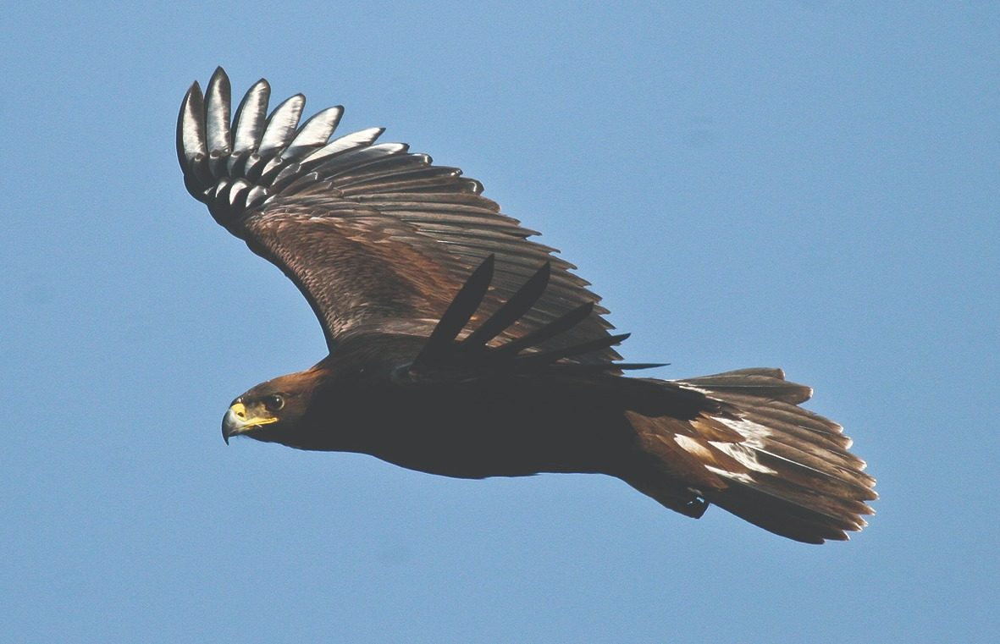
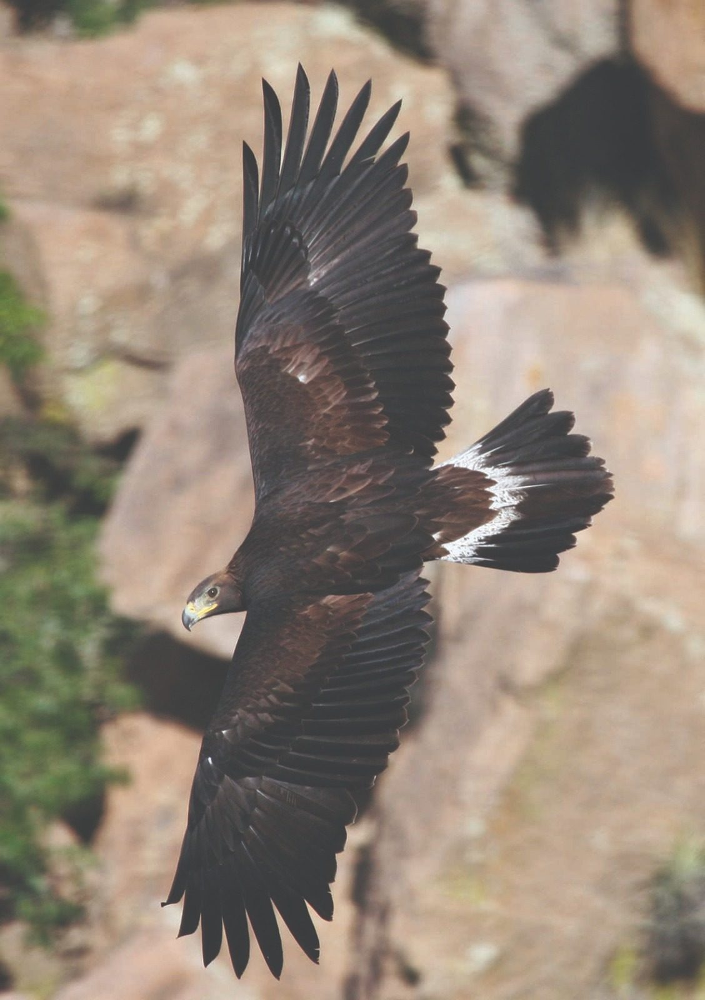
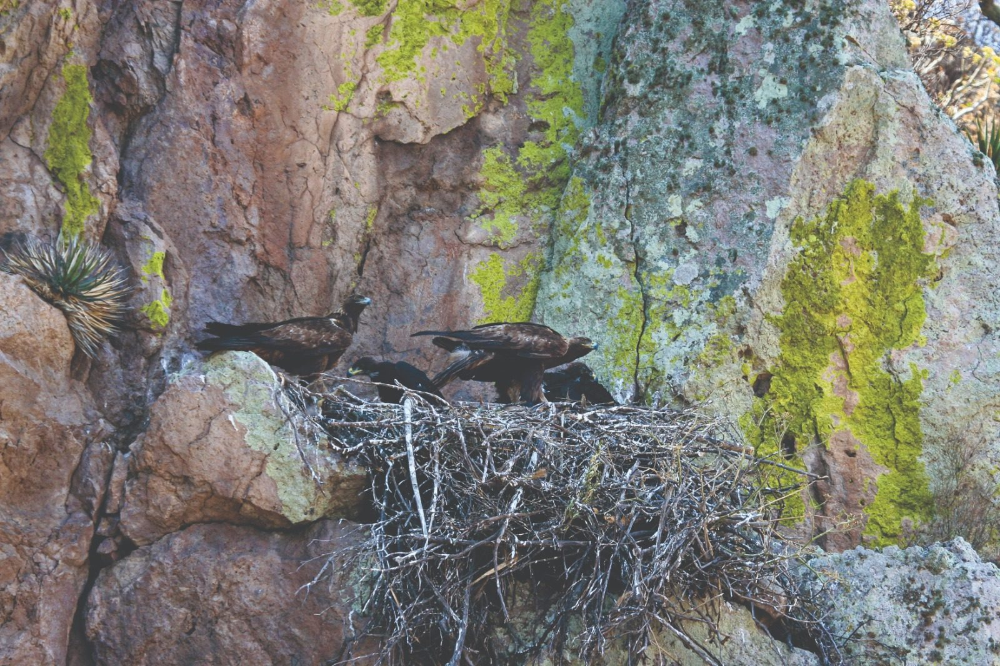
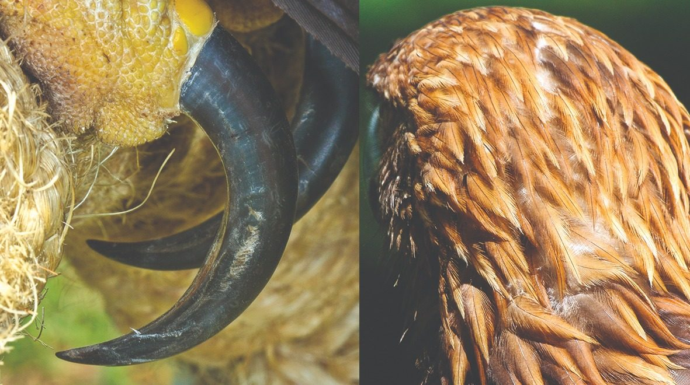
El Águila real (Aquila chrysaetos canadensis) es una de las aves rapaces más grandes e imponentes del mundo. Rapaz de cuerpo pesado, color café oscuro, con plumas lanceoladas de color café dorado brillante en la corona posterior, la nuca y los lados del cuello — rasgos que le dan su nombre. La punta del pico es negra, aclarándose a grisáceo hacia la base; la cera y las patas son amarillas. Sus tarsos están emplumados hasta la base de los dedos, característica diagnóstica que la distingue de otras grandes águilas.
Las hembras son hasta 10% más grandes en envergadura que los machos y hasta 40% más pesadas, alcanzando los 7.2 kg. Sus alas terminan en seis plumas que semejan dedos y su cola se observa ligeramente redondeada. Los juveniles presentan plumaje más oscuro y una mancha blanca en la parte ventral de cada ala.
Alcanza la madurez sexual entre los 4 y 5 años de edad. Las parejas son monógamas de por vida y defienden territorios de anidación de entre 11 y 152 km². Puede vivir más de 30 años en vida libre.
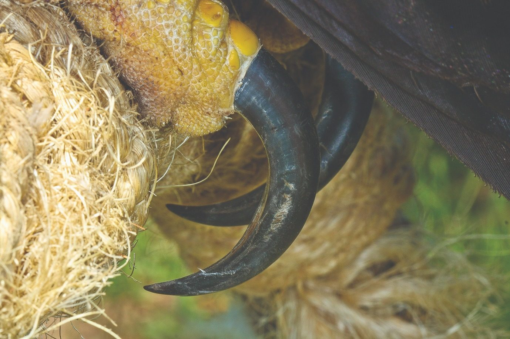
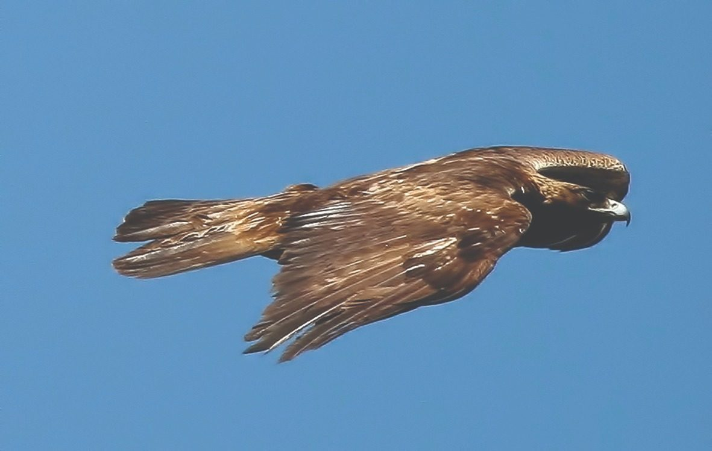
El Águila real inicia su temporada reproductiva entre noviembre y diciembre, con construcción del nido y cortejo, y se prolonga hasta mayo–junio. Las parejas son monógamas de por vida y defienden nidos que pueden heredarse por generaciones.
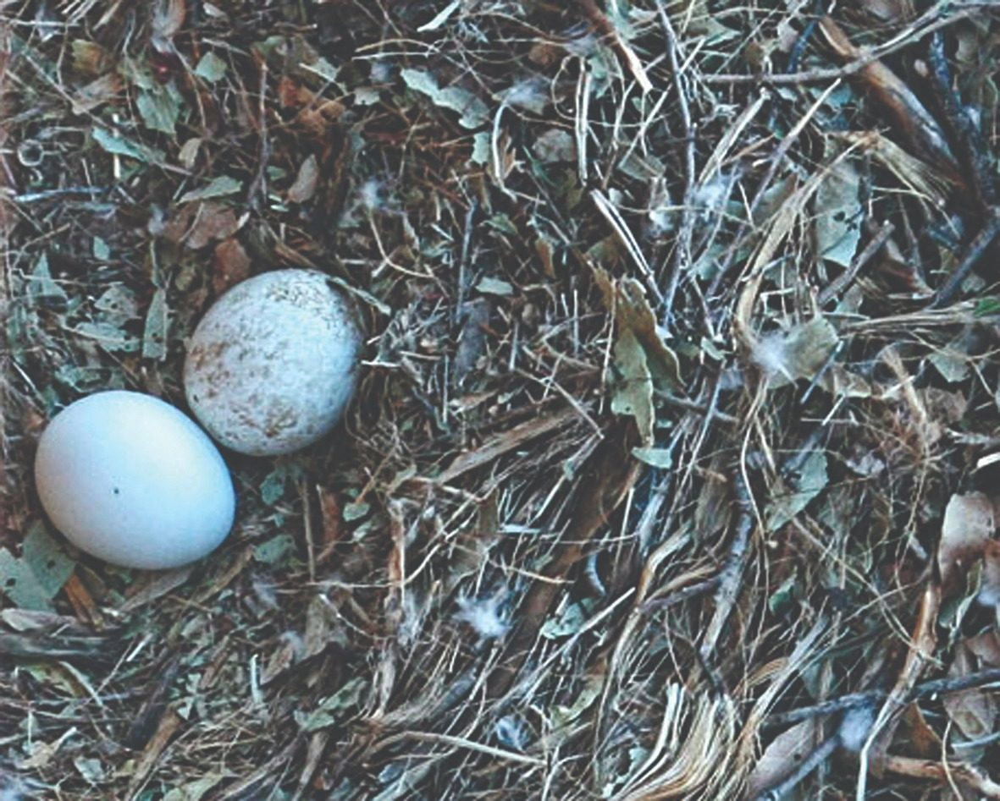
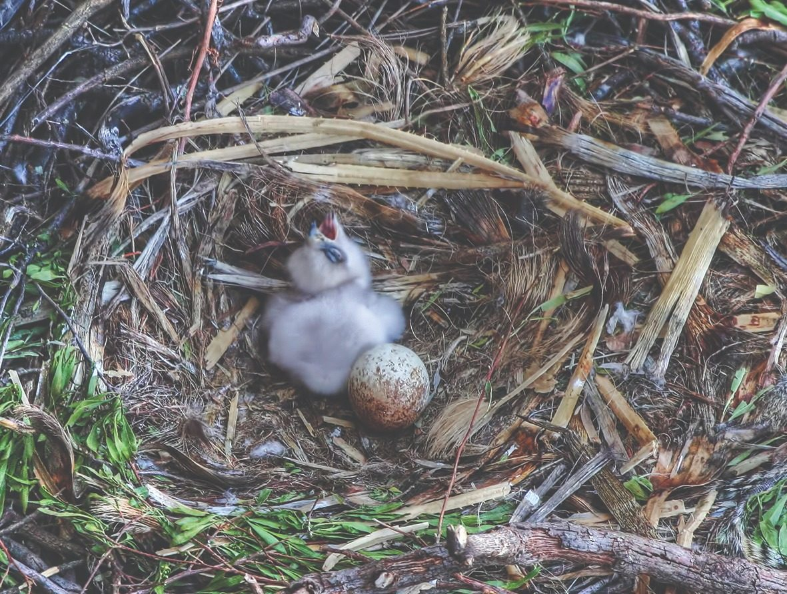
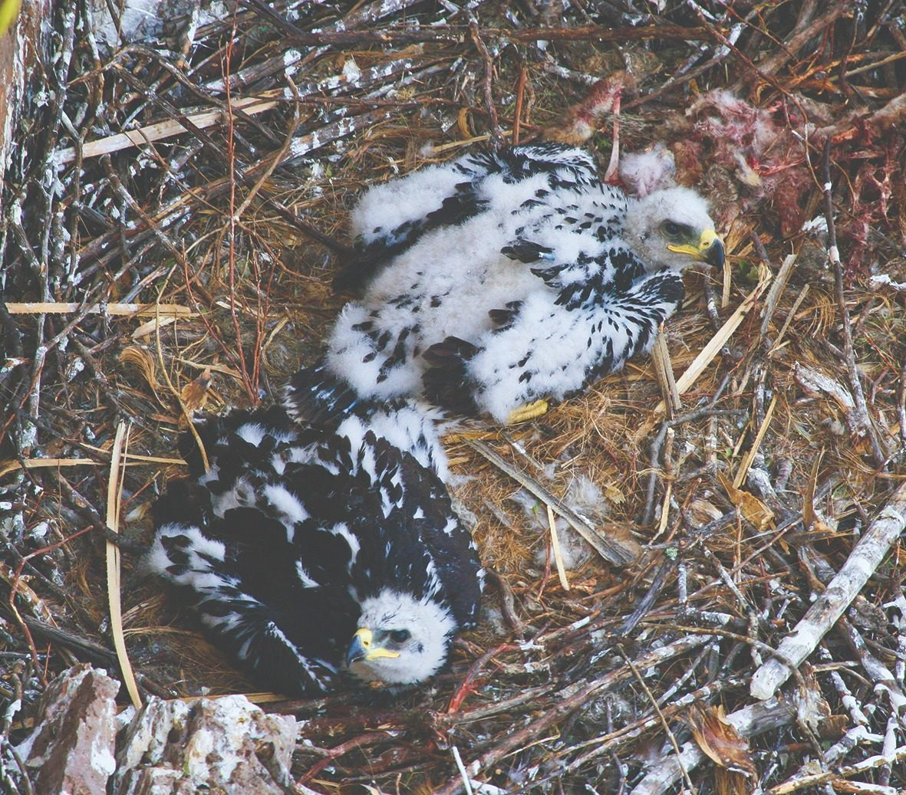
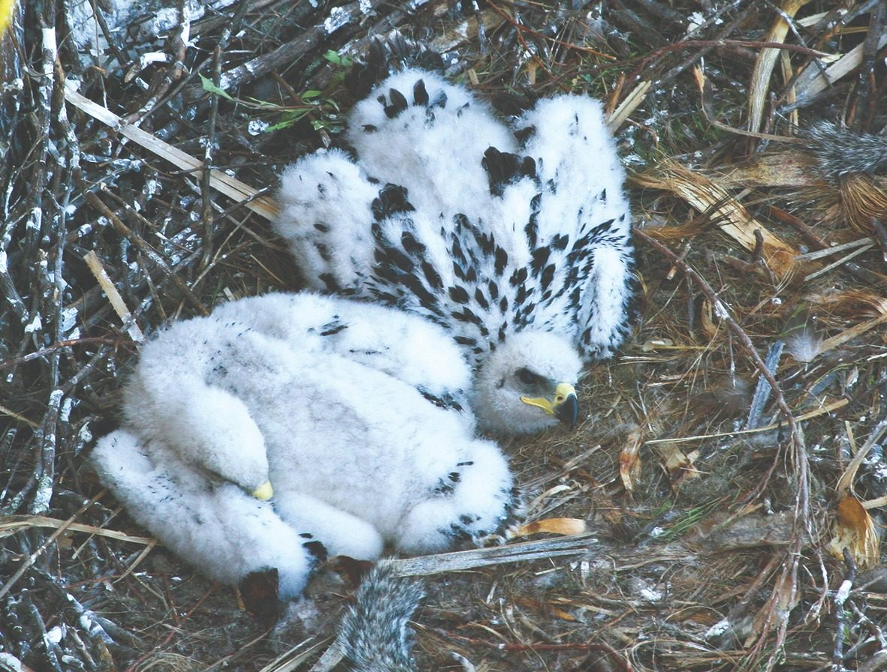
El porcentaje de parejas que ponen huevos es el componente reproductivo más variable año a año. En el suroeste de Idaho varía entre 38% y 100% (promedio 79%), y en Denali, Alaska, entre 4% y 88% (promedio 56%). Los principales determinantes son la abundancia de presas primarias (lepóridos y esciúridos) y la severidad del invierno previo. En años con alta densidad de liebres, las nidadas de 3 pollos son significativamente más comunes. El éstrés térmico sobre los pichones menores de 6 semanas es una causa importante de mortalidad en nidos sin sombra adecuada (Katzner et al., 2020).
La hembra incuba el 83–87% del tiempo diurno y el 100% del nocturno. El macho aporta la mayor parte del alimento durante las dos primeras semanas de crianza (83% de las entregas). Se requieren 24–33 kg de alimento para llevar un pichón desde la eclosión hasta el primer vuelo (~10 semanas). El cainismo — agresión entre hermanos — ocurrió en los 7 nidos con 2 crías estudiados en Idaho, causando la muerte en 3 de 7 crías subordinadas.
Históricamente distribuida en gran parte del territorio mexicano, hoy se registran 184 parejas reproductivas en 13 estados (2025), con mayor concentración en los estados del norte y centro del país.
El Águila real tiene distribución holártica que abarca latitudes de aproximadamente 20° a 70°N, con poblaciones dispersas más al sur. Es la rapaz diurna con distribución más amplia del mundo. Estimación global: 100,000–200,000 individuos (BirdLife International). Clasificada como Preocupación Menor (LC) por la UICN a escala mundial, aunque poblaciones de África, Oriente Medio y Japón muestran declives documentados.
Marcadores ubicados a nivel estatal según el número de parejas reproductivas registradas.
Las ubicaciones exactas de los nidos se mantienen confidenciales para proteger a la especie.
Fuente: monitoreo nacional de parejas reproductivas (Lozano-Román y Camacho-Márquez, 2025 — Chrysaetos Soluciones Ambientales). Programa basado en el PACE Águila Real.
Aguascalientes registra la mayor densidad poblacional con 1.06 parejas/1,000 km². La estimación norteamericana es de 5–10 parejas/1,000 km².
El Águila real mexicana está catalogada como especie AMENAZADA por la NOM-059-SEMARNAT-2010. En México enfrenta presiones concretas y documentadas —desde el envenenamiento por plomo hasta la pérdida de hábitat— que comprometen la viabilidad de sus poblaciones a largo plazo.
Haz clic en cada amenaza para conocer los detalles. Según el USFWS, de 386 águilas reales monitoreadas por telemetría (1997–2013) se determinó la causa de muerte en 97 casos: el 56% correspondió a causas humanas.
Conversión de tierras para agricultura, ganadería y urbanización. El 27% de los territorios registrados ya presenta vegetación modificada por el ser humano.
ALTA PRIORIDAD Ver detalle →La caza directa como trofeo o por conflictos con ganado ha sido determinante en la disminución histórica de las poblaciones en México.
ALTA PRIORIDAD Ver detalle →La infraestructura eléctrica representa un riesgo grave. En zonas como Janos, Chihuahua, este problema está bien documentado.
ALTA PRIORIDAD Ver detalle →La ingesta de pesticidas organoclorados y plomo de municiones en presas reduce el éxito reproductivo y puede causar la muerte.
ALTA PRIORIDAD Ver detalle →Las turbinas eólicas causan colisiones mortales, especialmente en juveniles. En California se registran 75–110 muertes anuales por turbinas.
PRIORIDAD MEDIA Ver detalle →La captura de huevos, aguiluchos y juveniles para comercio como mascotas o cetrería. Los especialistas protegen la información de los nidos.
PRIORIDAD MEDIA Ver detalle →El 56% de las muertes documentadas en adultos son de origen humano. La proporción de mortalidad antropogénica aumenta con la edad: 34% en aves de primer año, 57% en aves de 2–3 años, y 63% en adultos mayores de 3 años (Millsap & Furphy, datos en Katzner et al., 2020).
Fuente: Millsap & Furphy (USFWS), datos en Katzner et al. (2020). El 44% de las muertes documentadas fueron de causas naturales.
El Águila real es una rapaz grande de cuerpo pesado, color café oscuro y alas largas (envergadura de 185–222 cm; masa de la hembra hasta 6.5 kg). El plumaje varía con la edad, siendo los juveniles notablemente diferentes de los adultos.
El Águila real presenta distribución holártica: desde los 20° hasta los 70° N de latitud. Se reconocen seis subespecies diferenciadas por tamaño, saturación del color y tono de la nuca. La subespecie mexicana es A. c. canadensis.
Desde Alaska y Canadá hasta el norte de México. Poblaciones residentes y migratorias. Aspecto intermedio, ligeramente más pálida que la subespecie japonesa.
Europa (excepto Iberia) al este hasta el río Yenisey. Plumaje café medio, nuca dorada. Tamaño medio. Localidad tipo: Suecia.
Desde la Península Ibérica hasta el Cáucaso e Irán. La población más meridional del mundo en las Tierras Altas de Bale, Etiopía. Plumaje más oscuro, nuca parda.
Montañas Pamir hasta el Himalaya. La más grande de todas las subespecies. Nuca intermedia entre nominal y homeyeri. Usada en cetrería tradicional mongol.
Al este del Yenisey hasta Mongolia y NE China. Ligeramente más pequeña que daphanea. Nuca marrón rufo en lugar de dorado. Localidad tipo: Kamchatka, Rusia.
La más pequeña y oscura. Nuca rufo brillante. Filogenéticamente, pruebas recientes sugieren que está más emparentada con canadensis que con las subespecies escocesas.
El Águila real tiene distribución holártica con estimación de 100,000–200,000 individuos a nivel mundial (BirdLife International). Clasificada como Preocupación Menor (LC) por la UICN a nivel global, aunque las poblaciones de África, Oriente Medio y Japón muestran declives documentados. En Norteamérica, los estudios recientes indican que muchas poblaciones se mantienen por debajo de su capacidad de carga como resultado de la mortalidad relacionada con la actividad humana (Katzner et al., 2020).
Una vez superado el primer mes fuera del nido, el Águila real es un volador extremadamente eficaz. Utiliza corrientes ascendentes térmicas y orográficas para planear grandes distancias con mínimo gasto energético.
Los ámbitos de hogar reproductivos son sustancialmente más pequeños que los no reproductivos. En el desierto de Mojave, los adultos se desplazan a zonas de mayor elevación durante el verano. Los ámbitos de parejas vecinas se solapan solo ~4% durante la reproducción.
Un macho marcado ocupó el mismo territorio en el Cañón del Río Snake, Idaho, durante ≥12 años consecutivos. Las parejas "flotantes" no territoriales llenan vacantes cuando un adulto muere, actuando como amortiguador demográfico. Los adultos muestran fidelidad fuerte a sus zonas de invernada: 10 águilas en Idaho central fueron recapturadas a <1.6 km del lugar original hasta 5 inviernos después.
Las peleas por territorios pueden ser letales. En un estudio de 17 años en California, 4 adultos marcados murieron en encuentros territoriales. La proporción de mortalidad por peleas intraespecíficas estimada es del 18% en águilas adultas. Las peleas pueden incluir el agarre de garras en vuelo (talon-grappling) con giros completos antes de soltarse.
Generalmente captura presas de 0.5–4 kg, aunque puede atacar ungulados silvestres. Un metaanálisis de 35 estudios en 45 zonas del oeste de Norteamérica confirma que los mamíferos constituyen el 84% de su dieta durante la reproducción.
En el NCA del Río Snake se identificaron >2,200 presas individuales (1971–1981) y >1,160 entre 2014–2015. La liebre de cola negra (Lepus californicus) era preferida sobre la ardilla de tierra de Piute. Tras incendios masivos que destruyeron el hábitat de liebres, las águilas cambiaron su dieta principal a Gallareta americana y Pato de collar (Katzner et al., 2020).
Las parejas cazan liebres y otras presas en tándem: normalmente la hembra sigue al macho a menor altitud. Uno desvía la atención de la presa mientras el otro realiza la captura. En el Río Snake (Idaho), la caza en solitario tuvo un éxito del 29% vs solo 4.6% en caza en tándem (Collopy y Edwards, datos en Katzner et al., 2020).
Se han documentado casos de águilas siguiendo tractores, helicópteros de captura de fauna y caballos de caza, aprovechando las perturbaciones para atrapar presas desplazadas. Un águila en Idaho siguió a un jinete que cazaba conejos en artemisales y en dos ocasiones mató gallos de las artemisas lanzados por el jinete (KS, datos en Katzner et al., 2020).
Las poblaciones pueden ser no migratorias, parcialmente migratorias o migrar cortas, medianas o largas distancias. Las águilas boreales pueden migrar más de 5,000 km desde zonas de cría hasta áreas de invernada.
Las águilas evitan cruzar grandes extensiones de agua abierta que generen pocas corrientes ascendentes. En el este de Norteamérica, a veces quedan "atrapadas" en penínsulas como la de Gaspé y la de Michigan, rodeándolas varias veces antes de cruzar. El cruce de agua más largo registrado por telemetría fue de 32 km sobre el Lago Superior (una hembra adulta en noviembre).
El Águila real es una especie longeva de selección K: densidad poblacional baja, reproducción lenta, alta inversión parental. Los datos de telemetría de 386 individuos del USFWS (1997–2013) y los registros de anillamiento ofrecen el cuadro demográfico más completo hasta la fecha.
Los niveles de plomo en sangre de las águilas de California disminuyeron regionalmente tras la prohibición de munición de plomo en zonas de caza (2019). El cambio voluntario a munición sin plomo por parte de los cazadores es la medida de mitigación con mayor evidencia científica disponible.
Respuestas directas a las búsquedas más frecuentes sobre el Águila real en México, basadas en más de 25 años de investigación científica.
Fotografías del ciclo de vida del Águila real en México: desde la puesta de huevos hasta el vuelo adulto. Haz clic en cada imagen para ampliarla.
El PACE Águila Real (SEMARNAT/CONANP, primera edición 2008) es el documento rector de la especie en México. Organiza sus acciones en seis subprogramas: Protección (vigilancia, marco legal y control de actividades ilegales), Manejo (manejo del hábitat y de la especie en cautiverio), Restauración (rehabilitación de ecosistemas y mitigación de electrocución), Conocimiento (investigación científica y monitoreo biológico), Cultura (educación ambiental y difusión) y Gestión (coordinación institucional y financiamiento). De 2013 a 2025, las parejas reproductivas registradas crecieron de 81 a 184.
Registra tus observaciones en plataformas de ciencia ciudadana. Tus reportes alimentan el conocimiento sobre la distribución de la especie.
Ante cualquier caso de caza, captura o comercio ilegal de ejemplares, contacta a la PROFEPA. Tu denuncia puede ser anónima.
Una de las herramientas más poderosas para conservar al Águila real es la biotelemetría: el seguimiento remoto de individuos mediante dispositivos GPS que registran sus movimientos durante años. Estos datos revelan rutas de dispersión, territorios de caza y zonas de riesgo, y permiten dirigir los esfuerzos de protección con precisión científica.
Dispositivos ligeros tipo mochila, de pocos gramos, que representan una fracción mínima del peso del ave y registran su posición con alta precisión sin afectar su vuelo.
Tecnología y precios (Microwave Telemetry) →Los datos se transmiten por redes satelitales globales (como Iridium) y por redes celulares de baja potencia (LTE-M/GSM) donde hay cobertura, garantizando seguimiento incluso en zonas remotas.
Especificaciones GPS-GSM (Ornitela) →Los recorridos se almacenan y analizan en plataformas científicas internacionales que permiten visualizar las trayectorias en mapas interactivos y compartir los datos con la comunidad investigadora.
Sistema satelital Argos →Cada trazo representa el recorrido real de un ejemplar marcado con transmisor satelital. Haz clic en los controles para mostrar u ocultar cada individuo. Los datos abarcan de 2014 a 2021.
Fuente: Lozano Román y Vargas Velasco (2026), con datos del Proyecto Telemetría Satelital del Águila Real en México. Las trayectorias se muestran simplificadas con fines de divulgación; por seguridad de la especie no se revelan ubicaciones exactas de nidos.
Águilas reales capturadas en sitios de migración otoñal en el oeste de Norteamérica, rastreadas por satélite (Argos/GPS). Cada color representa un individuo; los círculos blancos marcan el inicio del seguimiento.
Fuente: Smith JP. 2019. HawkWatch International Golden Eagles. Movebank Data Repository (CC0 1.0).
Movebank es la base de datos global de seguimiento de fauna, alojada por el Instituto Max Planck de Comportamiento Animal. Reúne estudios de telemetría de águilas reales de todo el mundo y ofrece un repositorio de datos abiertos con identificadores permanentes (DOI) para uso científico y educativo.
Por seguridad de la especie, los estudios con datos sensibles restringen la ubicación exacta de los nidos. Los enlaces muestran la información pública disponible en cada plataforma.
Cada llamada del aguila real tiene un contexto: contacto entre pareja, mendicidad de un juvenil, alarma territorial. Esta biblioteca reune grabaciones de campo documentadas por observadores de todo el mundo, con su contexto conductual solo cuando el propio registro lo permite determinar, nunca por interpretacion nuestra del sonido.
Cargando grabaciones...
Fuente: Xeno-canto, biblioteca colaborativa de sonidos de aves. Cada grabacion conserva su licencia Creative Commons original y el credito a su grabador; el tipo de vocalizacion y el contexto conductual provienen del propio registro del observador.
Mucho antes de ser objeto de estudio cientifico, el aguila real ya era el animal mas venerado del Mexico prehispanico. Su imagen sostiene, todavia hoy, el simbolo central de la identidad nacional: la bandera de Mexico.
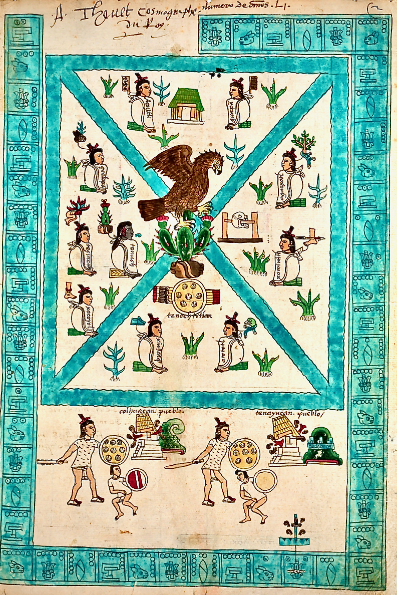
Codex Mendoza, folio 2r (c. 1541), dominio publico. Fuente: Biblioteca Bodleiana, Universidad de Oxford.
Segun la tradicion mexica, los sacerdotes de Huitzilopochtli encontraron la senal profetizada -un aguila posada sobre un nopal, devorando una serpiente- en un islote del lago de Texcoco, y ahi fundaron Mexico-Tenochtitlan en 1325. Esa escena es hoy el centro de la bandera nacional.
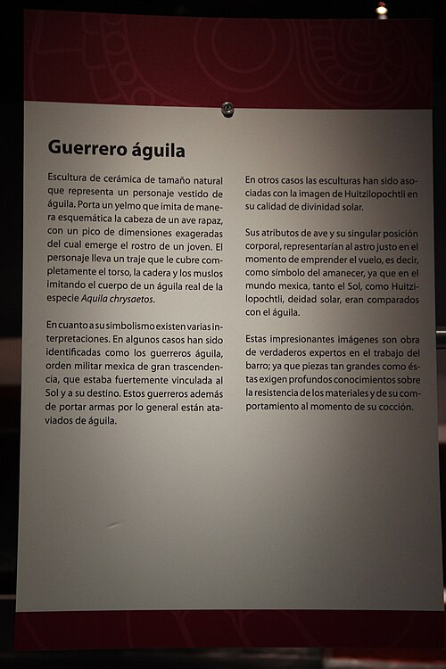
Foto: Gary Todd (Flickr), dominio publico (CC0).
Los cuauhtin o "Caballeros Aguila" formaban una orden militar y religiosa de elite, asociada a Huitzilopochtli y al Sol. Se ingresaba tras capturar prisioneros en combate; sus integrantes actuaban como intermediarios rituales entre los dioses y el pueblo, y muchos llegaron a ser consejeros del tlatoani.
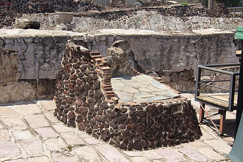
Foto: Mike Peel (www.mikepeel.net), CC BY-SA 4.0.
Las excavaciones del Templo Mayor de Tenochtitlan han recuperado los restos oseos de decenas de aguilas reales en ofrendas rituales -entre ellas la Casa de las Aguilas-, con mayor intensidad durante los reinados de Ahuizotl y Moctezuma Xocoyotzin (1486-1520). Las aves capturadas vivas eran mantenidas en jaulas por cuidadores dedicados.
La evidencia osea acumulada en las ultimas decadas deja claro que el aguila real no solo era conocida, sino activamente manejada por las culturas del Mexico antiguo mucho antes del Imperio mexica. En Los Tanques, Mascota (Jalisco), se hallo una ulna de aguila real perforada como colgante en un entierro ceremonial de alto estatus fechado hacia el 800 a.C., del periodo Formativo Medio. En la Piramide de la Luna de Teotihuacan, la Ofrenda 6 (excavada entre 1998 y 2004, hacia el 350 d.C.) contenia los restos de dieciocho aguilas reales, algunas con marcas de desgaste en las patas por haber sido atadas en cautiverio y alimentadas con conejo. Sumado a los mas de cuarenta ejemplares hallados en el Templo Mayor de Tenochtitlan, el registro arqueologico cubre casi tres mil anos de manejo continuo de la especie en territorio mexicano, desde el Formativo hasta el Posclasico.
Escudo Nacional de Mexico vigente (DOF, 1984)
El escudo nacional vigente -aguila, nopal y serpiente- quedo establecido por decreto en la Ley sobre el Escudo, la Bandera y el Himno Nacionales (DOF, 8 de febrero de 1984). Fuera del simbolismo, el aguila real es tambien una especie real y amenazada: figura en la Norma Oficial Mexicana como especie en peligro de extincion, y desde entonces es objeto del Programa de Accion para la Conservacion de la Especie (PACE) Aguila Real, coordinado por la Comision Nacional de Areas Naturales Protegidas.
Fuentes: Correa Lonche, G., El aguila y la serpiente. El problema del origen prehispanico del Escudo Nacional Mexicano (INAH); Cupul-Magana, A., Mountjoy, J.A. y Rhodes, R., hallazgo de una ulna de aguila real en Los Tanques, Mascota, Jalisco (~800 a.C.); Valadez Azua, R. y Sugiyama, S., restos de dieciocho aguilas reales en la Ofrenda 6 de la Piramide de la Luna, Teotihuacan (~350 d.C.); Lopez de Buen, R., "Aguila real, de ave ritual de los mexicas a escudo de Mexico"; SEMARNAT, "Aguila real: al rescate de un simbolo patrio".
Más de dos décadas de trabajo de campo y colaboración con investigadores, instituciones y editoriales de México y el mundo. Busca por título, autor, año o palabras clave — por ejemplo telemetría, anidación o conservación.
El listado reúne obras de divulgación, informes técnicos y artículos científicos con revisión por pares. Los documentos oficiales se atribuyen a sus instituciones. Para citar este portal: Lozano Román, L.F. (2026). Águila Real Mexicana. https://aguilarealmexicana.org/
Fichas técnicas listas para imprimir o guardar como PDF. Ideales para profesores, estudiantes y guardaparques. Uso libre con fines educativos.
El Águila real cría menos de un polluelo por pareja al año y más de la mitad de las muertes registradas son por causas humanas. Monitorear, proteger sus territorios de anidación y trabajar con las comunidades cuesta tiempo y recursos.
Tu donativo, sin importar el monto, sostiene el trabajo de campo que mantiene viva a esta especie en México.
Elige el medio que prefieras. Cada aportación se destina íntegramente al trabajo de conservación.
Donar con PayPal / Tarjeta →¿Eres una empresa o institución y quieres patrocinar el programa? Escríbenos a luisfelipe.lozano@aguilarealmexicana.org.
Noticias curadas sobre el Águila real en México y el mundo.
¿Sabías que el Águila real aparece en nuestra bandera y es el ave nacional de México? ¡Aprende todo sobre esta increíble especie!
El Águila real puede ver hasta 8 veces mejor que un humano. ¡Detecta un conejo desde 1.5 km de altura!
Sus garras son tan fuertes que pueden cargar presas del doble de su peso. Caza conejos, liebres y ardillas.
¡Una pareja puede tener hasta 14 nidos! Los construyen en acantilados rocosos y los heredan por generaciones.
Con las alas abiertas mide hasta 2.3 metros, ¡casi como una cama! La hembra es más grande que el macho.
Un águila marcada en México voló 6,500 km hasta Alaska. ¡Es uno de los viajes más largos jamás registrados!
Es el ave de nuestra bandera y escudo. Vive en 81 países del mundo, ¡pero para nosotros es muy especial!
Cinco actividades para explorar el mundo del Águila Real Mexicana
Katzner et al. (2020)
Golden Eagle (Aquila chrysaetos), version 2.0.
Birds of the World. Cornell Lab of Ornithology.
DOI: 10.2173/bow.goleag.02
Lozano-Román & Camacho-Márquez (2025)
Chrysaetos Soluciones Ambientales.
México.
Watson (2010)
The Golden Eagle, 2nd ed.
T & AD Poyser, London.
Gamma et al. (2024)
Protecting breeding sites: a critical goal for the conservation of the golden eagle in Mexico.
Journal of Ornithology. Springer.
Lozano-Roman y Vargas Velasco
Dispersión natal del individuo 121743.
En imprenta.
NOM-059-SEMARNAT-2010
Protección ambiental — Especies nativas de México — Categorías de riesgo.
SEMARNAT, México.
📷 Fotografías reales de campo (galería): Luis Felipe Lozano Román
🎨 Ilustraciones de referencia: Generadas con inteligencia artificial (Adobe Firefly / DALL·E) con fines exclusivamente divulgativos.
🗺️ Datos de biotelemetría satelital: Lozano Román & Vargas Velasco (2026). Proyecto Telemetría Satelital del Águila Real en México. Las ubicaciones de nidos activos no se divulgan por seguridad de la especie.